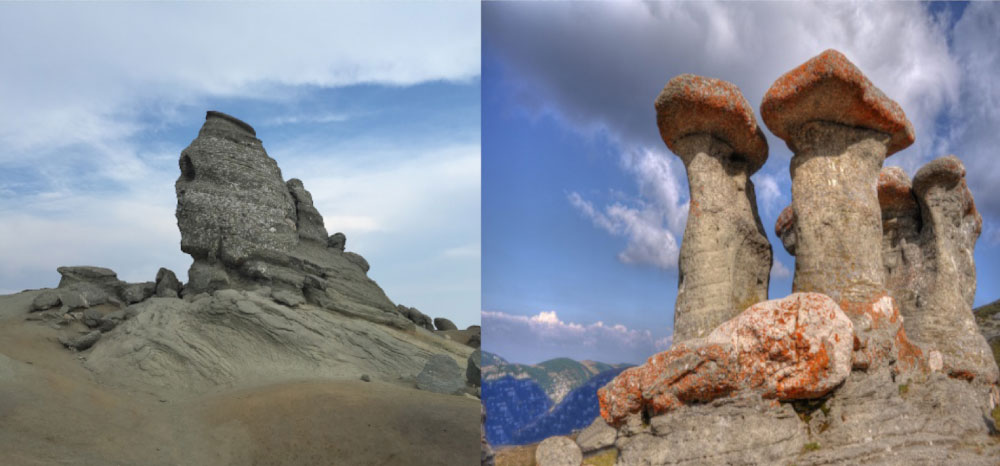

Bușteni is a small mountain town in the north of Prahova County, Muntenia, Romania. It is located in the Prahova Valley, at the bottom of the Bucegi Mountains, that have a maximum altitude of 2505 m. Its name literally means tree-logs in Romanian. One village, Poiana Țapului, is administratively part of the town, formerly a separate commune prior to 1950. According to the 2011 census, it has 8,894 inhabitants. Bușteni's average altitude is 900 m. It is one of the most popular mountain resorts in Romania, with year-round tourism opportunities, including skiing and mountain climbing.

Main attractions: Babele, Sphinx and Heroes' Cross
Babele and Sphinx. The Sphinx (Romanian: Sfinxul) is a natural rock formation in the Bucegi Natural Park which is in the Bucegi Mountains of Romania. It is located at an altitude of 2,216 metres (7,270 ft) within the Babele complex of rock formations. The first photo of the Great Bucegi Sphinx was probably taken in about the year 1900. This photograph was taken from a front position, not from a lateral one, as it usually appears in modern pictures. It only acquired its nickname, referring to the Great Sphinx of Giza, in the year 1936. The image of the sphinx appears when the rock, having an 8 m height and a 12 m width, is observed from a certain angle. The megalith has its clearest outline on 21 November, at the time the sun goes down..
Heroes' Cross. The Commemorative Cross to the Romanian Heroes of the First World War, also called the Heroes' Cross on Mount Cairaman is a monument built between 1926 and 1928 on Caraiman Peak at an altitude of 2,291 m located in Romania, in the Bucegi Mountains of the Southern Carpathians. It has a height of 36 metres and the nearest town is Buşteni. The name of the monument is "The Heroes' Cross", but it is popularly known as the "Cross on Caraiman". The Heroes' Cross was built between 1926 and 1928 in the memory of the railway heroes who died on duty in World War I fighting against the armies of the Central Powers. The cross was erected at the initiative of Marie of Edinburgh and King Ferdinand of Romania in order to be seen from a large distance as possible. The overall project was developed by Romanian architects Georges Cristinel and Constantin Procopiu.
2. Memorial House of George Enescu
George Enescu’s connection with the Royal House of Romania started in 1898, following the success of “The Romanian Poem” Enescu’s first opus, which ended with the Royal Anthem. The artist benefited from the support of Queen Elisabeta, also known as Carmen Sylva – her pseudonym as an artist. The queen, acknowledging the talent of the young musician, offered him a room, at his disposal, in the Peles Castle, a place where he could study. Also, Enescu was often invited by the queen to play in recitals at the Palace. The beauty of the place and the proximity of the Peles Castle made the musician building a house here, in 1923-1926, with the money he had earned during his first tour in America; the house followed the plan designed by the musician himself, with the aid of architect Radu Dudescu and it was named “Luminiş” Villa (“Glade” Villa). The following 20 years, until 1946 when he definitively left Romania, the musician constantly return to Sinaia, to spend a least one month a year – a time dedicated to composition, between his tours in Europe and North America. In 1947, Enescu, who was living in Paris, donated the villa to the Romanian state, to be used as a place of creation and recreation for artists. In 1995, the villa was opened as “George Enescu” Memorial House and since 2007 it has become a department of “George Enescu” National Museum. At the entrance of the villa there is a marble bust of George Enescu, made by the Romanian sculptor Ion Irimescu who was fascinated with the personality of the musician.
3. Bolboci Lake
Bolboci Lake is one of the hidden treasures of Bucegi Mountains, a vast lake created by blocking Ialomi?a River with a dam in 1988. Also called the Sea from Bucegi, Bolboci Lake is among the most spectacular natural attractions in Bucegi Massif. This extension of water, surrounded by picturesque landscapes dominated by mountains, well wooded, formed behind a dam located at the highest altitude in the country, 1438 meters. The view is even more spectacular during winter time; a part of the lake freezes over, while the pine trees are covered in snow. On the border of the lake you will find Bolboci Cabin which has about 60 beds, with restaurant and terrace. The cabin was built in 1928, before even the lake appeared and until 1971 it could be used only in summer, because it had no stove and wasn’t covered with iron. Bolboci Lake represents an important tourist hub from which tourists can go hiking or mountain biking on marked trails or can go visiting the main attractions in Bucegi, among which: Lake Scropoasa, the Plateau Cave Padina where you can also visit Ialomicioara Cave, Babele Cabine or Zanoagei Gorges. At a very short distance from the lake you will pass through the Babelor road known as the Transbucegi, recently bituminized.